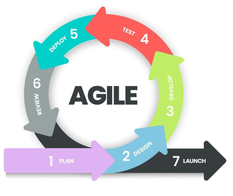

El ciclo de vida del desarrollo del software es un proceso que sigue
etapas específicas para crear y lanzar un producto de software.
Metodología de desarrollo
Conjunto de técnicas y métodos organizativos que se aplican para diseñar
soluciones de software informático.
Modelo secuencial
Son aquellos donde cualquier fase del proceso de desarrollo comienza una
vez que la anterior finalizó. Por ejemplo el modelo en cascada. Satisfacen
la totalidad de los requerimientos del cliente, sin embargo Esto puede
llevar meses incluso años para su entrega final.
Modelo iterativo o incremental
Se desarrolla una versión inicial con los requerimientos básicos del
sistema. Luego, en cada iteración, se agregan nuevas funcionalidades. Esto
permite que las etapas de desarrollo, se realicen en partes más pequeñas,
y se entregue una versión funcional del sistema al final de cada
iteración. Es como construir el software por partes, añadiendo más
características con cada ciclo de desarrollo.
Modelo en V (iterativo)
Se integra el proceso de pruebas al proceso de desarrollo, es decir, Para
cada etapa de desarrollo tenemos una etapa de pruebas asociada.
Agile-Scrum
Modelo iterativo e incremental que se enfoca en entregar funcionalidades
completas en períodos cortos de tiempo. Cada iteración, llamada sprint,
suele ser relativamente corta, durando desde horas hasta un par de
semanas. El objetivo es tener entregas rápidas y frecuentes de software
funcional.
Buenas prácticas en la ejecución de las pruebas
Validacion y Verificacion: Cada ciclo de desarrollo
debe contar con pruebas de validacion y verificacion
Actividades de desarrollo con actividades de pruebas:
Cada actividad de desarrollo tiene una actividad de pruebas
relacionada. Las etapas de pruebas deben comenzar en las etapas
tempranas del ciclo de vida.
Cada nivel de pruebas tiene objetivos específicos:
Por ejemplo, las pruebas de componentes tienen como objetivo
identificar posibles defectos, mientras que las pruebas de aceptación
buscan crear confianza en el usuario sobre el uso del software.
Análisis y diseño de niveles de pruebas sincronizado a las
actividades de desarrollo:
Esto quiere decir que las actividades relacionadas con las pruebas de
componentes deben iniciarse durante la etapa de desarrollo de
componentes, y así cada prueba cuando corresponda
Participar en la definición de requerimientos y diseño:
Los testers deben participar en la definición y refinamiento de
requerimientos y diseño
Círculo de trabajo ágil
Plan(Planificación):
Es la etapa inicial de planificación en donde todas las partes
involucradas en la metodología ágil, deben trabajar en conjunto. Una
vez realizado el análisis de los requisitos, el siguiente paso es
definir y documentar claramente los requisitos del producto y obtener
la aprobación del cliente o de los analistas.
Design(Diseño):
Otra de las fases más importantes que servirán para definir la
arquitectura y tecnologías que se utilizarán como también el diseño de
interfaz de usuario del software a construir.
Develop(Desarrollo):
En esta etapa comienza el desarrollo real y se construye el producto.
Test(Testing):
Esta etapa se refiere a la fase de prueba del producto, en la que se
informa de los defectos del producto, se rastrean, se arreglan y se
vuelven a probar, hasta que el producto alcanza los estándares de
calidad definidos.
Deploy(Lanzamiento):
El equipo va a revisar las características de todo aquello que se haya
desarrollado e implementado hasta el momento. Y se evaluará si ya se
encuentra listo para el cliente o no.
Review(Feedback):
Se encargará de reunir las opiniones de las partes interesadas y los
usuarios, de esta forma se obtendrá una retroalimentación general para
el próximo ciclo de implementación.

Herramienta:
JIRA
Es un software que ayuda al equipo a gestionar sus tareas y actividades.
Es una herramienta muy completa que permite la gestión y organización de
proyectos, a fin de optimizar muchas de las tareas que la construcción
de un producto implica. Es una herramienta muy utilizada en varias áreas
no solamente en desarrollo de software.
como usar JIRA prar tester
TRELLO
Es una herramienta para gestión de tareas online fácil de usar, visual e
intuitivo. Permite organizar las diferentes tareas a realizar en un
único espacio, un tablero. Permite dejar de lado los post-its acumulados
por tu mesa de trabajo, las listas de tareas pendientes y los
recordatorios en mil lugares diferentes.